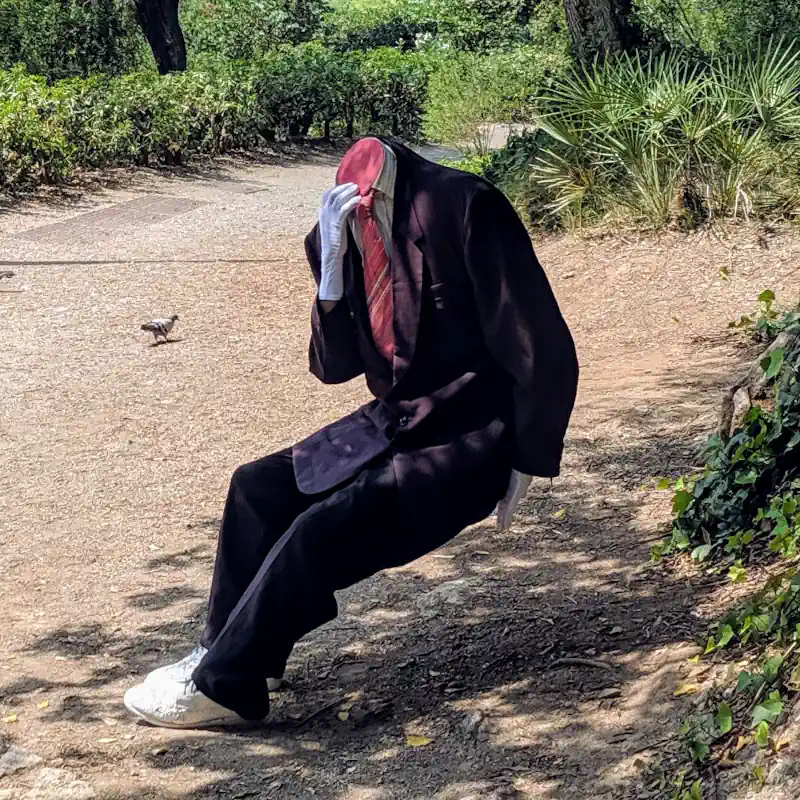

If you're interested in how Sauce came to be, you've have come to the right place. The TL;DR is
that Sauce was a side project that turned into a full time job for me. If you
want to know the full history, keep reading.
First Known Screenshot
In 2015, after having recently retired from a startup company, I was riding bikes quite a
bit and getting into Strava for the first time. While I loved the social aspects of Strava, like the segment
leaderboards, I found it still lacked a few more nerdy features that I used in my racing days. Nothing that
would be particularly difficult to implement. So without much thought, I slapped together a
brutally simple Chrome Extension to add the things I wanted and published it to the Chrome Web Store.
The main feature was the Critical Power table, inspired by the great TrainingPeaks WKO
software. For quite a while that was really it. I went back to full-time work in 2016, but kept making
enhancements and adding things in my spare time. The Critical Power
table became the selectable Peak tables which added heart rate, cadence, speed, and several other categories.
Around then, I also changed the name from "Strava Sauce" to "Sauce for Strava™". I still hear old-school users call
it the former.
By the end of 2019, Sauce had grown to several thousand active users, and I started seeing it show up in videos
from YouTubers like
Lanterne Rouge and
NorCal Cycling. My
"real job" was a startup building a privacy focused messaging platform; basically Slack with Signal encryption.
We were unfortunately running out of money and didn't have enough revenue to keep operating, so as that door was
closing, I decided I might as well put my full attention on Sauce and see what I could do with it.
As it turned out, 2020 was a really good year to start working from home! 😂
My main goal was to build a more complete analysis suite that could track all your training data, what became
Sauce Performance, but also to
build on the existing features with a renewed level of commitment. I launched a Patreon account and
tied some of the new "Bonus" features to it. Sauce wasn't paying my bills by any means, but all signs were
suggesting that the increased focus was working.
Sauce for Strava was reaching some good stability in 2021 and growth continued, reaching tens of thousands of users.
Winter was approaching, marking the start of the Zwift season in Idaho. During one of my indoor sessions, while
lamenting some missing features in Zwift such as time-gaps between groups and average power, I
realized I could probably build something that did for Zwift what I was already doing for Strava.
I had more time in my schedule to take on new developments, so I whipped up a
proof of concept, uploaded it to YouTube
and posted a message on Reddit to see if anyone was interested. The response was highly favorable and I started
working on Sauce for Zwift immediately.
However, things were not especially smooth for this project in the beginning. Before I could even launch the first
public version, Zwift reached out to developers in the community to let us know they were enabling encryption
on their data protocol. While this was 100% the right thing for Zwift to do, it meant Sauce for Zwift, and dozens of
other tools that extended Zwift, were dead in the water. We all used the same method of listening to the network
data directly on the computer running Zwift, but this only works if there is no encryption.
A bit deflated by the whole situation, I reluctantly decided that this was the end of the road for any Zwift related software.
I updated the source code repository to indicate it was inactive and made it available to the public with a GPL license.
Just before giving up completely, I had one fleeting thought. If you can use Zwift to "Fan View" another athlete,
why couldn't I do the same thing? I'd have to write a Zwift-compatible game client from scratch, and I'd have to
figure out their encryption protocol. Both of which I'd have no documentation or support for. But in theory,
if the Zwift servers thought my software was just another game, connecting to watch another athlete, we would be back
in action!
Thus began several months of head-down work to try and understand all the pieces involved. During this
time, I had essentially no clue if I was going to be successful. The best way to describe this task is like
trying to recreate a cake recipe but you don’t know which ingredients were used, have no idea about quantities,
and can only ever see the original cake after it has been run through a blender. I won't bore you with the details,
but let's just say I was reading a lot of assembly code and my former encryption experience
was pretty useful.
Eventually, and to my utter surprise, I did get it working. I was able to successfully connect to the Zwift network,
fully encrypted, and activate the "Fan View" mode that turns on the data stream. This was a real Eureka moment,
and it was incredibly satisfying to know that so much effort was not wasted. There was still more effort to tackle the
final 20%, but the hard part was over and I was able to start shipping early Betas soon after.
Since then, I've been building and maintaining both products full time. There is a vibrant Discord community for
patrons. There is also a group of fine
folks who build customizations on top of Sauce for Zwift in the form of Mods. Some
of these have become very popular for the Zwift Racing League events.
It's been an amazing ride, and I seriously love what I do. If you're one of the many people that have supported
Sauce over the years, I want to let you know I'm truly grateful.
Frank's hungry, you wouldn't let him starve would you?
Your generous support
means I can continue to work on Sauce and avoid getting a real job.
Need help?
Questions?
Suggestions?

Don't Panic
The Discord server available to patrons is for the best place to talk shop. There are usually a few hundred people there, myself included, that have likely encountered whatever issue or question you have. It's also just a positive and fun place to hangout (very nerdy). ★★★★★
If you want to send me a suggestion or just chat about life, the universe, everything, then send an email to support@sauce.llc. I try my best to answer every email, but I can't make promises about turnaround time. ★★★☆☆